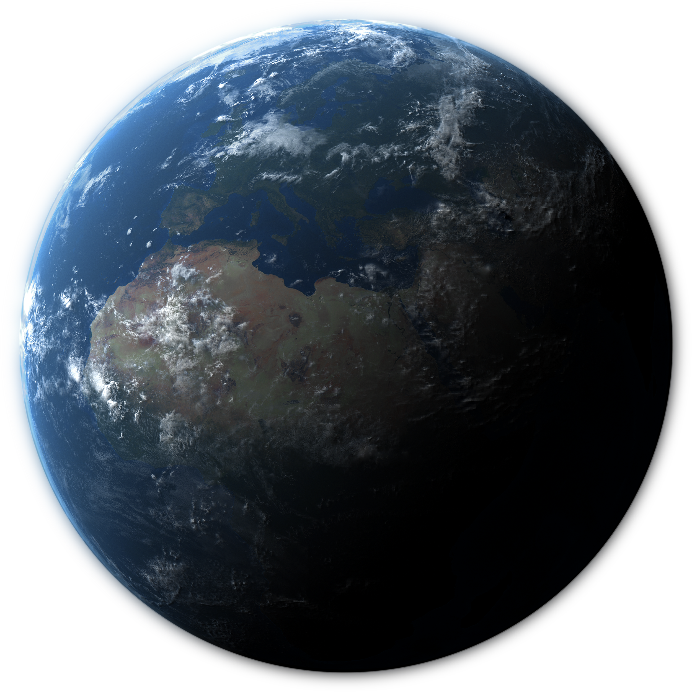

Bem-vindo à nossa viagem pela galáxia!
Neste projeto, exploraremos algumas das descobertas mais importantes da astronomia, além de conhecer feitos históricos que marcaram décadas — frutos de séculos de estudo dedicados por grandes nomes da Física e da Matemática.
Aqui no site, você encontrará marcos históricos da astronomia entre 1920 e 2020, cobrindo um século de avanços científicos. Cada período representa 20 anos de descobertas e conquistas.Agora, aperte os cintos e prepare-se para uma incrível aventura pelo espaço!
Este projeto é um trabalho da disciplina de Web I, realizado no curso de Engenharia de Computação do IFSul de Minas. O intuito é treinar o uso de HTML, utilizando o mínimo de CSS, enquanto exploramos a história da astronomia.
